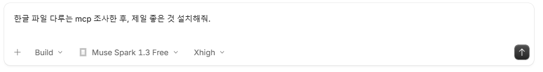
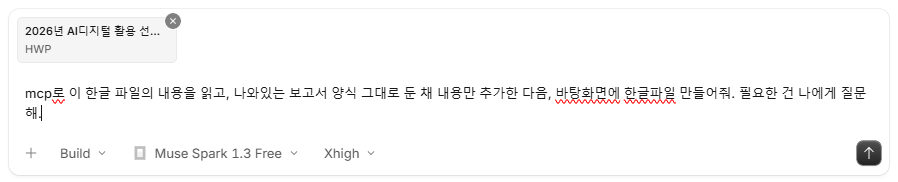

상세 과정
AI로 한글 다루기 - 계획서 작성
한글 MCP를 설치하고, 제공된 운영계획서의 양식을 유지하며 내용을 채워봅니다.
실습 자료2026년 AI디지털 활용 선도학교 운영계획(안내용)
한글 파일 내려받기 ↓실습 순서
한글 MCP 설치하기
AI 앱에 한글 MCP를 조사해 설치해 달라고 요청합니다.
MCP는 AI가 프로그램을 다루게 하는 도구입니다.
AI에 이렇게 요청해 보세요
한글 파일 다루는 mcp 조사한 후, 제일 좋은 것 설치해줘.

한글 파일 첨부하고 내용 채우기
제공된 공문 한글 파일을 AI 앱에 첨부합니다. 파일 안의 계획서 양식은 유지하고, 내용을 채우는 데 필요한 사항은 AI가 먼저 질문하도록 요청합니다.
AI에 이렇게 요청해 보세요
한글 mcp로 이 한글 파일의 내용을 읽고, 나와있는 보고서 양식 그대로 둔 채 내용만 추가한 다음, 바탕화면에 보고서 한글파일 만들어줘. 필요한 건 나에게 질문해.
